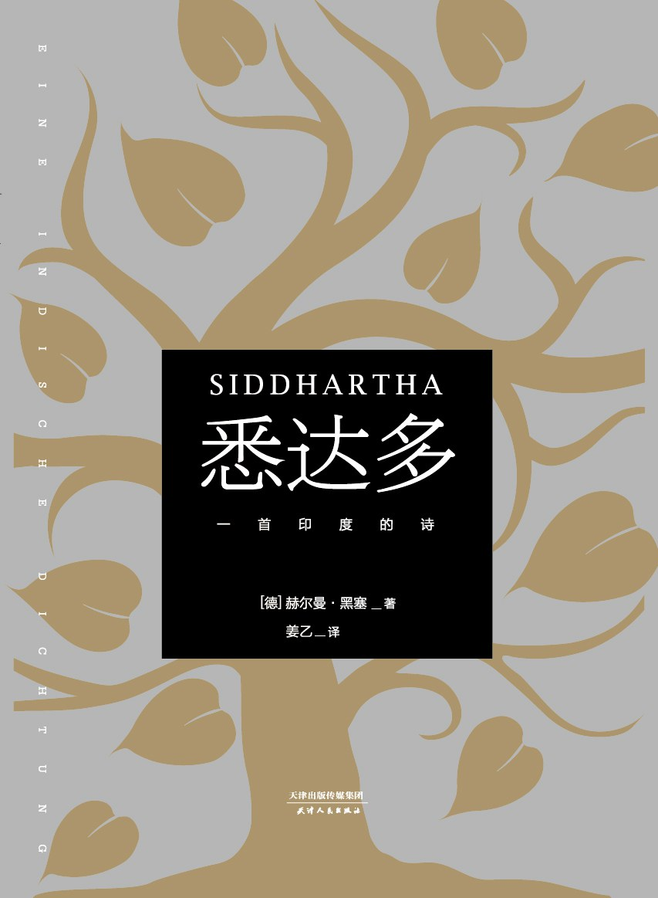

《悉达多：一首印度的诗》

总体观点
《悉达多：一首印度的诗》（Siddhartha）是赫尔曼·黑塞对古印度精神传统与西方存在主义觉醒做出的最深邃、最诗意的哲理回应。青年婆罗门悉达多拥有世人艳羡的才智与出身，却在经卷祭祀中感受到了无法遏止的虚无与干渴。他毅然告别家庭步入森林，经历绝食苦修、觐见佛陀释迦牟尼，却做出了全书最震撼的决断——拒绝跟随佛陀的现成教义，因为“知识可以传授，但智慧唯有亲身经历方能获得”。
黑塞借悉达多的命运撕碎了传统修行中将“精神”与“肉体”割裂对立的清规戒律。悉达多步入红尘，在名妓卡玛拉怀中领悟情欲，在富商卡玛斯瓦米身旁经商聚财，在骰子赌桌上体会沉沦。唯有当他在罪恶与厌倦的枯井边缘彻底窒息、在奔腾的大河边几欲自尽时，生命才迎来了最彻底的翻转：他投身于摆渡人瓦苏迪瓦身旁，向大河学习倾听，学会将时间视作虚妄，并在承受对叛逆儿子的噬心深情后，彻底消解了自我的狂妄防线。
全书以近乎圣咏的音乐化语言，证明了救赎绝不来自对现世的逃避与禁绝，而来自对万事万物——善与恶、欢愉与痛苦、生与死的全然接纳与深情拥抱。这是一部献给所有在意义荒原上跋涉的现代人的精神灯塔，它温和而坚定地宣告：一切痛苦皆是觉悟的必经火炼，宇宙的本质正是当下完满无缺的爱。
核心观点
-
1. 智慧无法言传：现成教义无法替代个体生命的亲身涉险
再完美的圣贤教义也只能传递客观知识，却无法转让主观顿悟。真正的觉醒必须由个体孤身涉险、在错误与泥泞中亲手淬炼出来。
悉达多在祇园亲眼目睹佛陀乔达摩圆满无瑕的法相，却依然选择向佛陀告别，因为他深知佛陀悟道的秘密无法通过言语布道复制，唯有独自流浪方能得道。 -
2. 世俗经验的神圣价值：感官沉沦并非罪孽而是必经火炼
将尘世肉欲与财富视作肮脏魔障是苦行者的盲目偏见。不曾深刻沉溺于凡俗欲望并品尝其幻灭苦果的人，其所谓的出离心不过是苍白的虚掷。
悉达多在卡玛拉的花园中学习接吻与缠绵，在商海中学习算计与周旋，正是这些数十年的世俗沉浮，彻底打碎了他年轻时清高自傲的精神洁癖。 -
3. 时间的幻象：过去、现在与未来在奔腾大河中融为一体
苦难与焦虑源自人类受困于线性时间的错觉，执着于过去之悔与未来之惧。大河没有过去与未来，只有永恒存在的当下。
摆渡人瓦苏迪瓦引导悉达多倾听水流，大河在源头是水滴、在悬崖是飞瀑、在大海是狂浪、在云端是雨雪，每一个形态都在当下同时存在，生灭流转本无分别。 -
4. 丧子之痛的人性深渊：在无能为力的剧痛中彻底击碎执念
对叛逆儿子的盲目溺爱让半生超然的悉达多沦为卑微受苦的凡夫俗子。正是这种完全无法被理性降伏的舐犊深情，让他真正懂得了尘世众生的痴狂与伟大。
面对骄纵叛逆、偷钱出逃的儿子，悉达多狂乱地穿过森林追寻，最终在灌木丛前痛哭跪倒，领悟到哪怕是圣人也无法代替至亲去承受命运的苦厄。 -
5. 神圣的圆融之声：倾听宇宙万汇汇聚而成的奥姆（Om）
当万物的欢呼、啜泣、愤怒、渴求不再被主观切割为善恶二元对立，世间一切声浪便交织融汇成一首宏伟壮丽、完满自足的神圣宇宙交响乐。
在老摆渡人即将离去的黄昏，悉达多伏在大河边倾听，他同时听到了情人的呻吟、凶手的喘息、孤儿的哀号与求道者的诵经，万声归一，唯余庄严无上的奥姆。
全书思维导图 · 知识脉络树
全书结构
-
第一章 婆罗门之子
描绘少年悉达多在清晨河边诵经与祭祀中的卓越天资，以及内心深处对经卷文字无法止渴的深沉虚无感。
悉达多在父亲面前整夜静立如石雕，以坚不可摧的静默决绝迫使德高望重的父亲同意其离家苦修。 -
第二章 沙门行
跟随林中苦修者忍饥挨饿、忍受烈日暴晒、练习催眠与灵魂出窍，却发现苦修只是在自我与本能之间短暂逃避。
悉达多将意识投射在秃鹰的腐尸与豺狼的撕咬之中，醒来后叹息此种出离不过是醉汉饮酒般的暂时麻醉。 -
第三章 乔达摩与第四章 觉醒
前往祇园谒见释迦牟尼佛陀，与好友乔文达分道扬镳，在林中彻底醒悟世界的美好，决意不再逃避感官现实。
悉达多坦然面对佛陀直言其法度无懈可击，但唯有自我探索才能真正成佛，随即孤身走向未知的红尘城镇。 -
第五章 卡玛拉与第六章 随顺世俗
走进繁华大都会，拜名妓卡玛拉为师修习情爱之术，为富商卡玛斯瓦米打理商贸，逐渐被金钱与享乐蚕食吞没。
悉达多最初将经商视作游戏毫不在意盈亏，却在日复一日的奢靡中渐渐沾染了凡夫俗子的焦虑与贪婪。 -
第七章 轮回与第八章 在河边
在精神荒芜中梦见金丝雀死于牢笼，深夜惊醒弃家出走，在枯井河滩边几欲溺水自尽，却在神圣奥姆声中死而复生。
悉达多凝视浑浊的河水企图一跃而下，内心深处突然震响一声纯净无垢的“Om”，瞬间驱散了全部绝望迷障。 -
第九章 摆渡人与第十章 儿子
投奔老船夫瓦苏迪瓦以大河为师，收留病逝卡玛拉留下的儿子，在儿子的憎恶与出逃中品尝人世间最撕心裂肺的深情。
老船夫默默将削好的木桨递给痛哭流涕的悉达多，带他坐在船头凝视奔流的漩涡，用沉默接纳全部创痛。 -
第十一章 奥姆与第十二章 乔文达
瓦苏迪瓦归隐森林，悉达多彻底证道；老年乔文达再次寻访河畔，在悉达多的额头亲吻中亲见万象归一的无上化境。
乔文达俯身亲吻悉达多的额头，眼前刹那间闪现出千万张面孔——婴儿、骷髅、野兽、神明，泪流满面长跪不起。